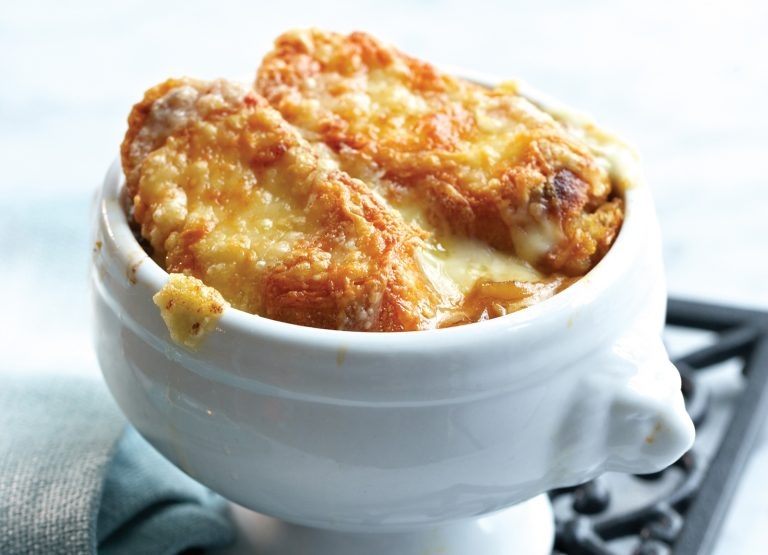

Voorgerecht
Gehaktbrood
Nagerecht
Voorgerecht
Als voorgerecht gaan we french onion soup maken.
Ingrediënten
- 1 liter groentebouillon
- 50gr boter
- 1 eetlepel olijfolie
- 1kg uien, in ringen gesneden
- 2 eetlepels bruine basterd suiker
- 4 teentjes versnipperde knoflook
- 2 eetlepels bloem
- 250ml droge witte wijn
- 6 stukjes stokbrood
- 150gr geraspte Gruyère kaas
Bereidingswijze
- Doe de groentebouillon in een steelpan en breng het op laag vuur rustig aan de kook. Laat het vervolgens op laag vuur zachtjes koken.
- Smelt ondertussen de boter met de olie in een grote koekenpan met dikke bodem.
- Voeg de uien toe en fruit het met de deksel op de pan gedurende 10 minuten tot ze glazig zijnVoeg de suiker toe en bak het nogmaals 15 minuten onder regelmatig roeren tot de ui gekarameliseerd is. Let goed op dat de uiringen aan het einde niet verbranden en matig zonodig het vuur.
- Voeg de knoflook voor de laatste paar minuten toe, zeef de bloem door het mengsel en roer alles goed door.
- Verhoog het vuur en voeg al roerend de wijn toe, gevolgd door de hete bouillon.
- Dek de soep af en laat gedurende 15 minuten staan.
- Voor het serveren rooster het brood even onder een gril en schep de soep in vuurvaste kommen.
- Leg een stuk stokbrood op de soep en bestrooi deze met de geraspte kaas.
- Zet de kop soep met brood en kaas onder de gril tot het kaas gesmolten is.
- Et voilà! Bon appetit!
